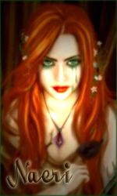

Naeri
Points : 0

Joué par :
Naeri
Joué par :
[ Information masquée ]
Lieu de naisance : Lune d'Argent
Sexe : Homme
Race : Mort-vivant
Faction : Horde
Formation : Chasseur
Guilde :
Artisanat 1 : Mineur
Artisanat 2 : Forgeron
Description :
Naeri, d'où le Secret des Cendres
I Prélude
Naeri CendreSang, née de l'amour commun d'Aran et Orgaë CendreSang. Riche famille qui vivait à Lune d'Argent.
Aran possédait un poste de Haut Gradé dans les rangs de la Milice de la Capitale, il avait réussi à se tailler une certaine réputation parmi les siens, considéré comme quelqu'un de réfléchi mais aux méthodes brutales, ce qui peut paraître assez paradoxal. Certains affirment qu'il coupait les mains des suspects pour ensuite les brûler et soi-disant « lire » dans ces cendres pour apprendre la vérité. Toujours est-il que cet Elfe de sang restait quelqu'un de craint et de respecté.
Sa femme, Orgaë, passait la plupart de son temps à Etudier l'art des Arcanes. Elle était une personne discrète, mystérieuse et imprévisible. Son ingéniosité l'avait tiré par le passé de bien sombres situations dans lesquelles elle s'était mise à cause de certaines magouilles et deal douteux
II Une éducation particulière
Naeri fut formée dès son plus jeune âge au combat, son père jouant le rôle de formateur, mais aussi à l'Art des Arcanes, dont sa mère prenait un malin plaisir à faire l'institutrice.
La jeune Elfe de Sang décida de s'orienter vers un type de combat mêlant puissance d'origine physique et magique. L'utilisation de l'Arc était devenue sa méthode d'attaque favorite, mélangeant discrétion et intelligence, qui étaient ces deux meilleurs atouts.
Elle apprit par la suite à apprivoiser un animal pour qu'il devienne son familier et obéisse à ses ordres, ainsi, elle s'en servirait comme chair à canon pendant qu'elle provoquerait le plus de dégâts possible à distance, avec son arc.
Le temps passa, Naeri devint majeure, et il était de songer à se trouver un travail. Elle suivit les traces de son père, à quelque chose près : elle fut recruté par une unité militaire de Lune d'Argent nommée SR (Section de Récupération). Son travail consistait à travailler en équipe, dans le but de récupérer des objets protégés par des personnes d'une faction ennemie, ou bien de glaner des informations dans un endroit inhospitalier tout ceci pour servir la communauté de son peuple.
III Où l'on succombe à la Haine
Mais comme dans toute famille, dans toute vie, il y a toujours des problèmes ayant une importance majeure pour notre avenir.
Dans ce cas-là, ce fut l'arrestation d'Aran CendreSang et de sa femme Orgaë Cendresang, pour trafic de composants interdits, d'objets maudits, de fausses copies de tableaux, de meurtres, et surtout pour la participation et l'intégration des deux accusés à une Organisation Secrète visant à faire tomber le système politique de la communauté des Elfes de Sang pour le profit de cette organisation.
La décision des dirigeants fut directe : Ils étaient condamnés à mort.
Condamnés à êtres brûlés, ironie du sort pour des personnes sachant lire dans les cendres. Ce serait la nuit tombante le jour même de l'arrestation, dans la Cour du Soleil, qu'ils seraient exécutés.
La foule s'était rassemblée autour des deux bûchers où étaient ligotés Aran et Orgaë. Un Elfe de Sang s'avança, face aux deux condamnés :
-Vous périrez pour vous avoir participer et intégrer une organisation nuisible à notre communauté. Avez-vous une dernière chose à dire ?
Naeri était au milieu de la foule, agenouillée et en larmes, ses parents lui avaient de ne pas s'inquiéter, mais la situation prêtait plutôt à ce qu'elle fasse le contraire.
Les dirigeant en personnes regardaient d'un balcon du Palais comment se déroulait les choses, ils étaient pile poil en face des deux condamnés.
C'est Aran, qui prit en premier la parole, d'une voix forte et portante :
-Oui j'ai en effet une chose à dire, à vous, fameux et subtils gouverneurs. Si vous connaissiez si bien que ça notre organisation, alors vous devriez savoir que nous avons toujours un tour d'avance.
Alors, du cercle que formait la foule autour des bûchers sortirent une vingtaine de personnes en robes noires et pourpres, encapuchonnées, portant chacun une bougie au bout de leur main droite. Ils chantaient Non, c'était une incantation !
Aran aperçut Naeri au milieu de la foule, il lui cria :
-Fuis ! Fuis ma petite !
Un sceau représentant une étoile à cinq branches se dessina sur le sol, délimité par les personnes encapuchonnées.
Il y eut un grand et long cri strident, venu de nulle part, tout le monde se tordit de douleur en se bouchant les oreilles.
Pendant ce temps, les fauteurs de troubles avaient eut le temps de délivrer Aran et Orgaë.
La panique régnait, les enfants pleuraient dans les jupons de leurs mères, ces dernières étant elles-même terrorisées. La foule se dispersait, les gens trébuchaient les un sur les autres. C'était le chaos total.
Un combat s'engagea entre Aran et ses hommes contres les soldats de la capitale. Naeri courut à la rescousse de sa mère, même si elle n'était pas d'une grande utilité, elle ne pouvait pas rester là à rien faire.
Aran reçut une flèche en plein torse, puis une seconde à l'épaule gauche. La dernière lui fut fatale, elle se planta dans la nuque, l'Elfe de Sang s'écroula au sol, une flaque de sang était en train de s'écouler sur le sol, ce n'était pas la seule, le sol en était jonché.
Naeri ne sut plus que dire, elle restait muette, des larmes s'étaient remises à couler. Sa mère, elle, devenait hystérique, folle de rage, devant la perte d'un être qu'elle avait tant aimait.
-Vous paierez !!! De vos vies, de votre sang, de vos Cendres ! Mais vous paierez coûte que coûte ! Hurla-t-elle. Sales chiens de Lune d'Argent, que le Fléau vous emporte tous ! Tous misérables que vous êtes !
Les personnes encapuchonnées attrapèrent Orgaë et Naeri, avant de les emportés à toute vitesse à l'extérieur de la ville.
D'autres alliés les attendaient aux portes, avec des montures de toutes sortes.
Un des membres de cette fameuse organisation prit la parole en s'adressant aux fuyards :
-Rentrons. Il y a déjà eu assez de morts de notre côté.
Et ils prirent la direction du sud, le voyage s'annonçait long.
La très jeune Elfe de Sang était assise en deuxième place sur un Raptor guidé par un Troll, elle était à moitié couchée, les yeux grands ouverts. Elle marmonnait sans cesse: « Ils paieront Ils paieront Ils paieront Chiens de Lune d'argent Je vous hais Ils paieront
À suivre...